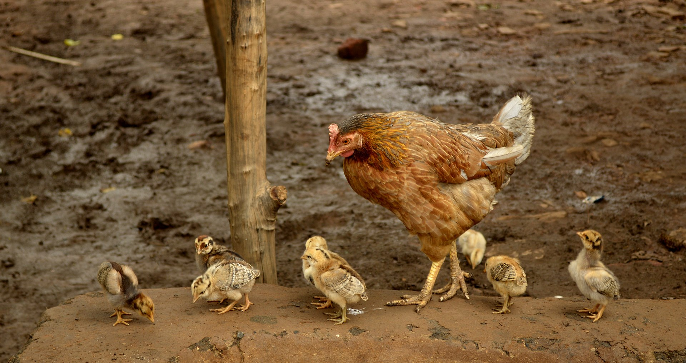
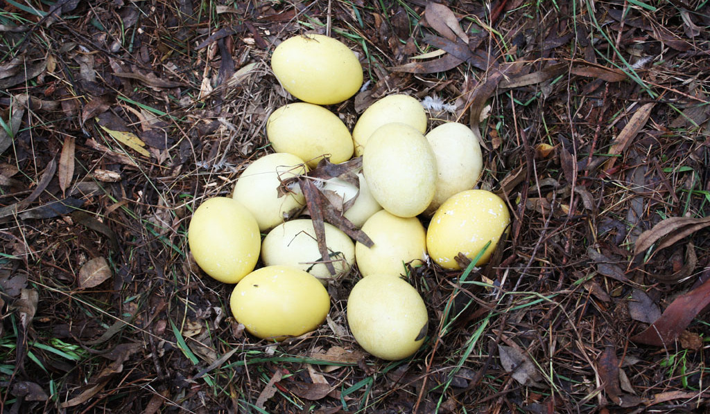
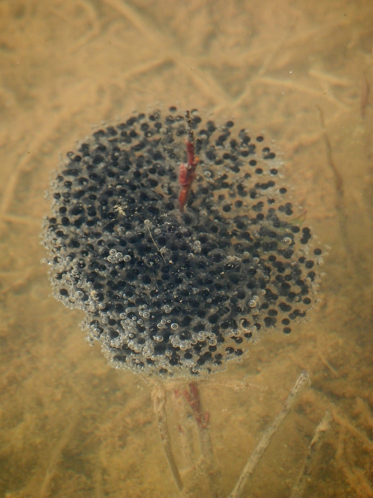
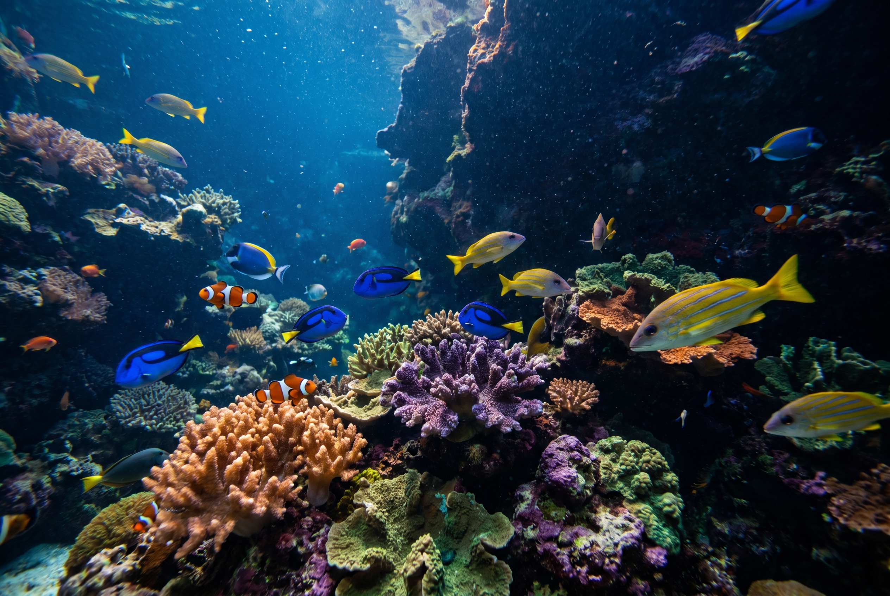
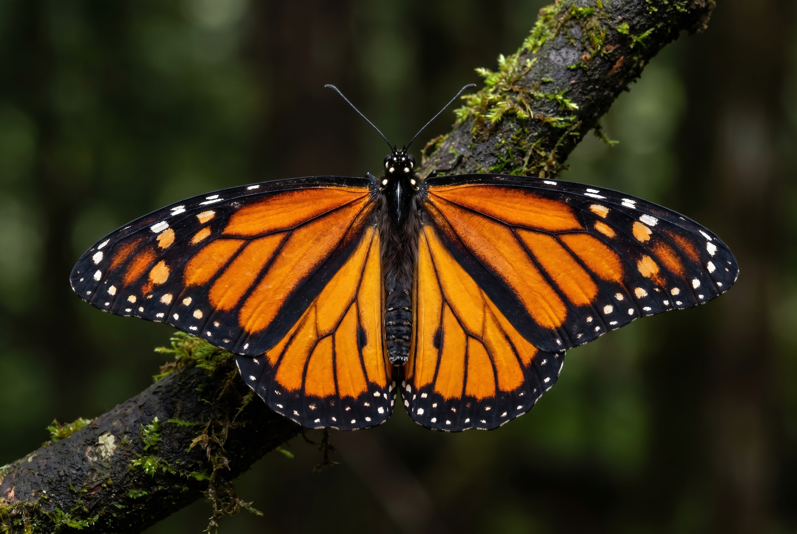
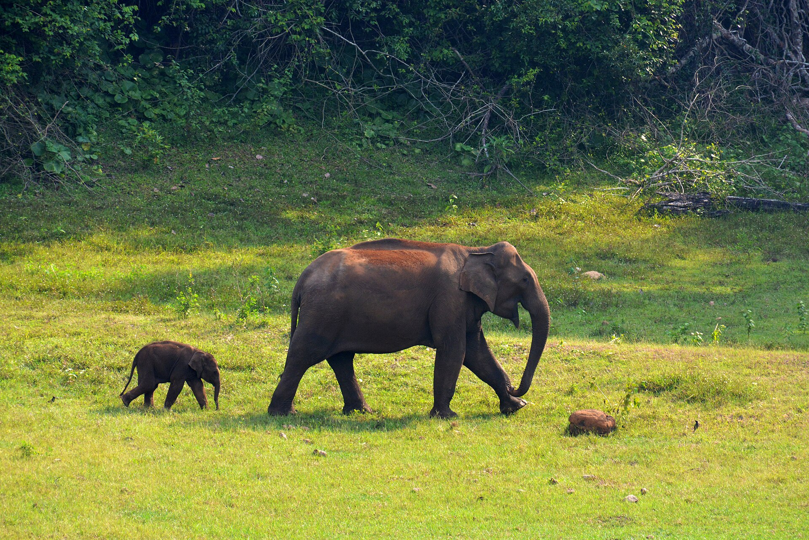
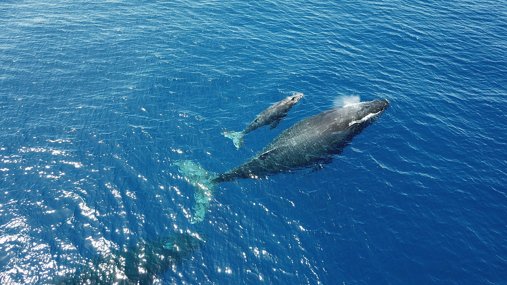
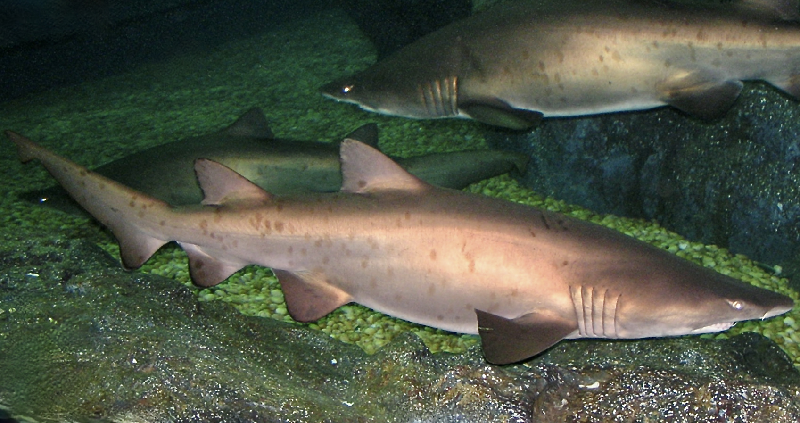
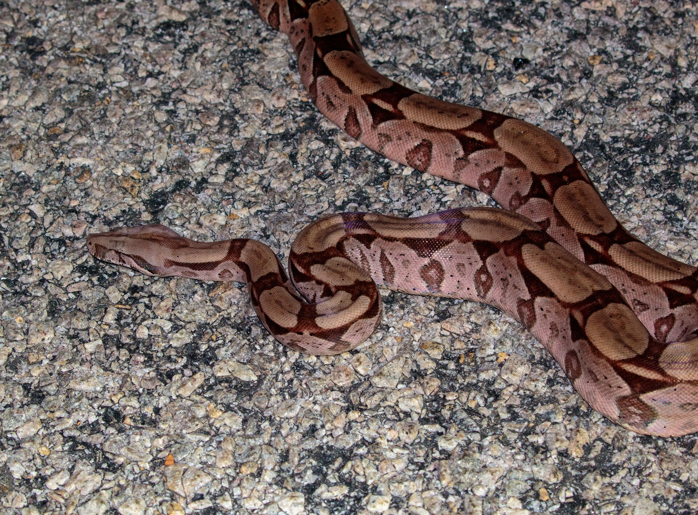
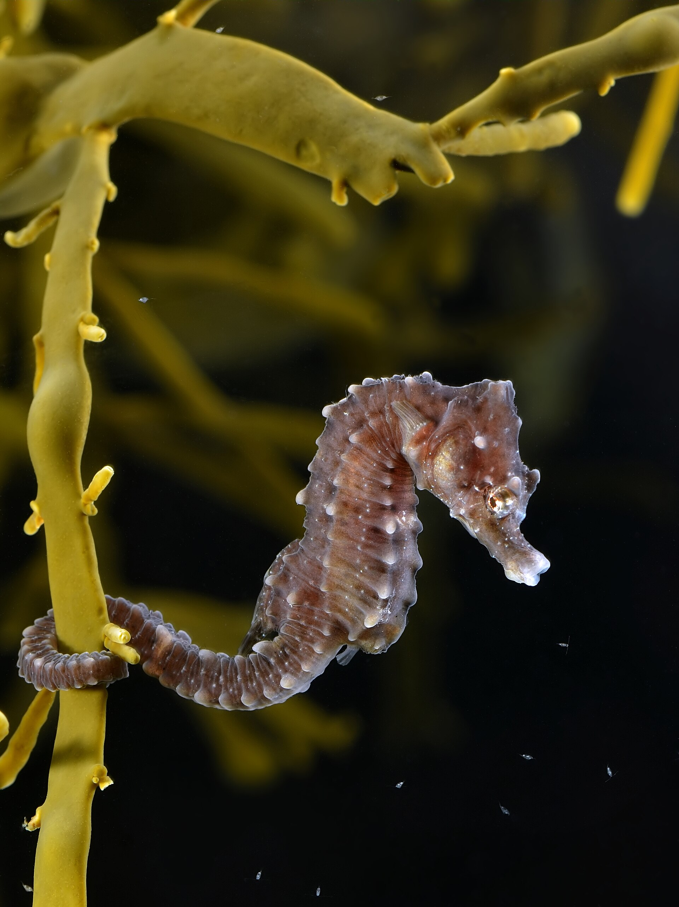

¿Cómo nacen los animales?
La reproducción es una función vital: sin ella las especies desaparecen. En la mayoría de los animales la reproducción es sexual: una célula femenina (óvulo) se une con una masculina (espermatozoide) y se forma un nuevo ser.
Después de la fecundación, el embrión empieza a desarrollarse. La gran pregunta es: ¿dónde y cómo se desarrolla ese embrión hasta el nacimiento? Según la respuesta, los animales se clasifican en tres grupos: ovíparos (nacen de huevos que la madre pone), vivíparos (nacen vivos del cuerpo de la madre) y ovovivíparos (nacen de huevos que se abren dentro del cuerpo de la madre). Las palabras vienen del latín: ovum (huevo), vivus (vivo) y parire (parir, dar a luz).
Ovíparos
Son los animales que ponen huevos. El embrión se desarrolla dentro del huevo, fuera del cuerpo de la madre, y se alimenta de la yema que viene adentro. Cuando el embrión termina de formarse, rompe el cascarón y nace. Son ovíparos todas las aves, la mayoría de los reptiles, los anfibios, la mayoría de los peces y casi todos los insectos.
¿Cómo es el huevo?
- • Cáscara dura (aves y reptiles) o cubierta gelatinosa (anfibios y peces)
- • La yema es el alimento del embrión durante todo el desarrollo
- • La cáscara protege y deja pasar el oxígeno que el embrión necesita
- • Los huevos de anfibios y peces necesitan estar en el agua para no secarse
Dos estrategias
- • Muchos huevos, poco cuidado: peces y anfibios ponen miles; la mayoría no sobrevive
- • Pocos huevos, mucho cuidado: las aves incuban y protegen a sus crías al nacer
- • Algunas aves hacen nidos; las tortugas entierran sus huevos en la arena
- • El calor de la incubación es clave: sin temperatura adecuada, el embrión no se desarrolla





En el ñandú, el macho es el que incuba: junta en su nido los huevos de varias hembras (¡más de 30!) y los empolla durante unos 40 días. Después también cuida solo a los charabones durante meses.
Vivíparos
Son los animales cuyas crías se desarrollan dentro del cuerpo de la madre, en un órgano llamado útero. El embrión no está en un huevo: recibe alimento y oxígeno directamente del cuerpo materno a través de la placenta. Cuando la cría está lista, nace viva. Casi todos los mamíferos son vivíparos.
La placenta y la gestación
- • La placenta conecta a la cría con la madre: le pasa nutrientes y oxígeno, y retira los desechos
- • El tiempo dentro de la madre se llama gestación o embarazo
- • Al nacer, la cría se alimenta de la leche materna (glándulas mamarias)
- • Dentro del cuerpo materno el embrión está protegido y a temperatura constante
Gestación según la especie
- • Ratón — unos 20 días
- • Perro — unos 2 meses (63 días)
- • Ser humano — 9 meses
- • Ballena azul — 11 meses
- • Elefante — 22 meses: ¡el embarazo más largo del reino animal!


Un caso especial: los marsupiales
Los marsupiales son mamíferos vivíparos, pero su cría nace muy prematura, casi sin formarse, y completa su desarrollo trepando hasta una bolsa externa llamada marsupio, donde se prende a una tetilla. Ejemplos: el canguro, el koala y, en Argentina, la comadreja overa, muy común en el conurbano bonaerense.
Ovovivíparos
Son una estrategia intermedia. La madre produce huevos, pero no los pone afuera: los retiene dentro de su cuerpo. El embrión se desarrolla dentro del huevo y se alimenta de la yema, igual que en los ovíparos, pero protegido dentro del cuerpo materno. Cuando el huevo eclosiona, la cría nace viva. No hay placenta: la madre solo da refugio, no alimento directo.
¿En qué se diferencia?
- • Vs. ovíparo: no pone huevos; las crías nacen vivas
- • Vs. vivíparo: no hay placenta; el embrión se alimenta solo de la yema del huevo
- • Ventaja: el embrión está más protegido que en un huevo puesto afuera
- • Es frecuente en ambientes fríos o acuáticos, donde un huevo externo no sobreviviría
Ejemplos
- • Tiburón toro (sarda) — las crías eclosionan dentro del útero materno
- • Boa constrictor — serpiente que pare crías vivas
- • Víbora de la cruz — serpiente venenosa argentina, ovovivípara
- • Lución — lagarto sin patas que retiene sus huevos



En el caballito de mar, ¡el que queda «embarazado» es el macho! La hembra deposita los huevos dentro de una bolsa que el macho tiene en el vientre, y es él quien los incuba hasta que eclosionan y libera a las crías.
Diagrama Comparativo
Las tres estrategias lado a lado. Prestá atención a dónde se desarrolla el embrión y de qué se alimenta: ahí está la clave para no confundirlas.
Tabla Comparativa
Clasificá estos animales
Arrastrá cada animal a la caja correcta (o tocá el animal y después la caja). Cuando termines, tocá Comprobar.
Animales para clasificar
Excepciones y Curiosidades
En biología, toda regla tiene su excepción. Acá van dos casos que rompen el molde:

Casos que sorprenden
- • Los monotremas (ornitorrinco y equidna) son mamíferos que ponen huevos: ¡son ovíparos que dan leche!
- • Los pulgones pueden tener crías sin fecundación, un fenómeno llamado partenogénesis
- • En las abejas, los zánganos (machos) nacen de huevos sin fecundar; las obreras y reinas, de huevos fecundados
- • El sapo de Surinam incuba sus huevos en cavidades de la espalda de la hembra
Preguntas para Pensar
Tocá cada pregunta para revelar la respuesta.
¿Por qué una rana pone cientos de huevos y una elefanta tiene una sola cría por vez?
Los huevos puestos en el agua están expuestos a depredadores y peligros: la mayoría no llega a adulto, por eso se producen muchísimos. La elefanta protege a su cría dentro del cuerpo y después la cuida durante años: con una cría bien protegida alcanza.
Si el ornitorrinco pone huevos, ¿por qué es un mamífero y no un reptil?
Porque tiene pelo y alimenta a sus crías con leche de glándulas mamarias: esas dos características definen a los mamíferos. Poner huevos es un rasgo ancestral que este grupo conservó.
¿Qué ventaja tiene desarrollarse dentro del cuerpo de la madre? ¿Y qué desventaja?
Ventajas: protección, temperatura constante y alimento asegurado. Desventajas: la madre gasta mucha energía, no puede tener muchas crías a la vez y queda más expuesta mientras gesta. Ninguna estrategia es «mejor» en absoluto: cada una funciona para el ambiente de cada especie.
Un tiburón nace vivo. ¿Es vivíparo?
No necesariamente. Muchos tiburones son ovovivíparos: el embrión se desarrolla en un huevo dentro de la madre y se alimenta de la yema, no de una placenta. Nacer vivo no alcanza: hay que mirar de dónde salen los nutrientes.